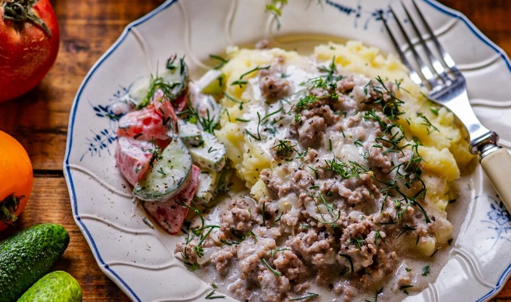

50g võid
5 dl vett või puljongit
2 sl jahu
3 sl hapukoort
Soola ja pipart maitse järgi
500g hakkliha
1 sibul, hakitud
NB! Vee ja hapukoore asemel võib kasutada piima.
Lisa pannile sibul ning prae mõned minutid.
Lisa hakkliha, pruunista ja maitsesta soola-pipraga.
Puista peale jahu ja sega kiirelt läbi.
Vala vähehaaval juurde vesi ning kuumuta segades, kuni kaste pakseneb.
Lisa hapukoor ning maitsesta.
Soovi korral lisa rohelist sibulat või murulauku.
Hind: 7 eurot | Portsjonid: 4 | Hind portsjoni kohta: 1.75eur | Valmistusaeg: 50min
Koostisosad:
Mõned kartulid50g võid
5 dl vett või puljongit
2 sl jahu
3 sl hapukoort
Soola ja pipart maitse järgi
500g hakkliha
1 sibul, hakitud
NB! Vee ja hapukoore asemel võib kasutada piima.
Valmistamise juhised:
Koori ja keeda kartulid soolaga maitsestatud vees kuni need on pehmed.Lisa pannile sibul ning prae mõned minutid.
Lisa hakkliha, pruunista ja maitsesta soola-pipraga.
Puista peale jahu ja sega kiirelt läbi.
Vala vähehaaval juurde vesi ning kuumuta segades, kuni kaste pakseneb.
Lisa hapukoor ning maitsesta.
Soovi korral lisa rohelist sibulat või murulauku.